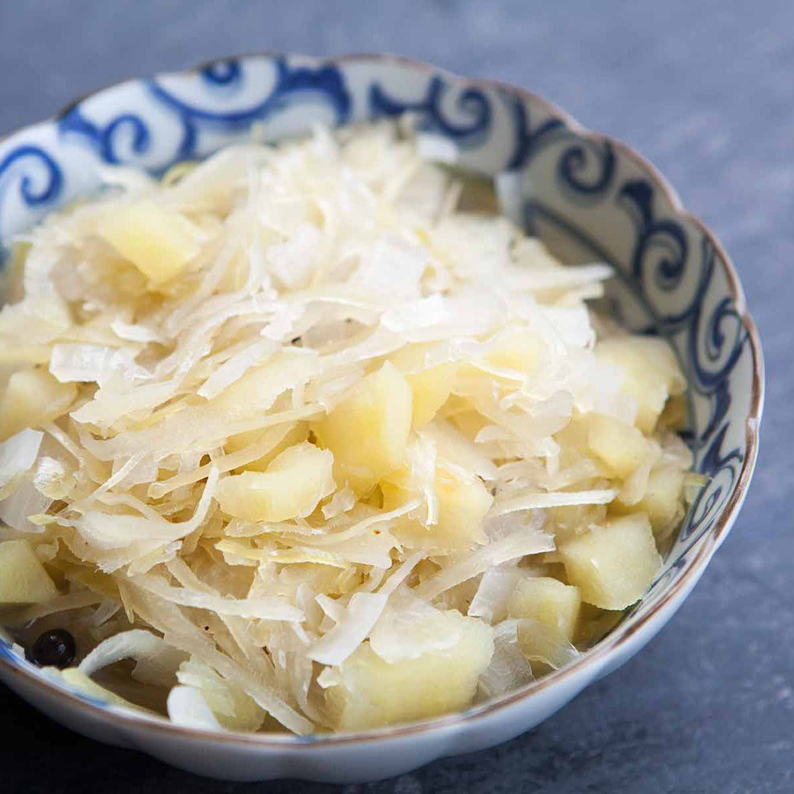
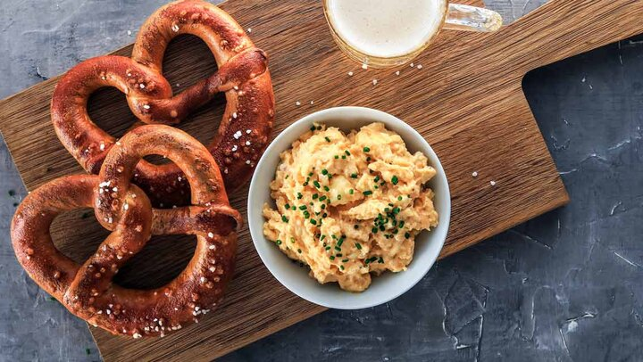
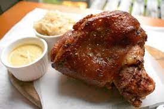
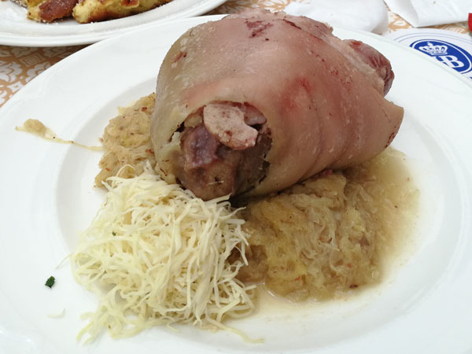
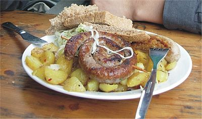
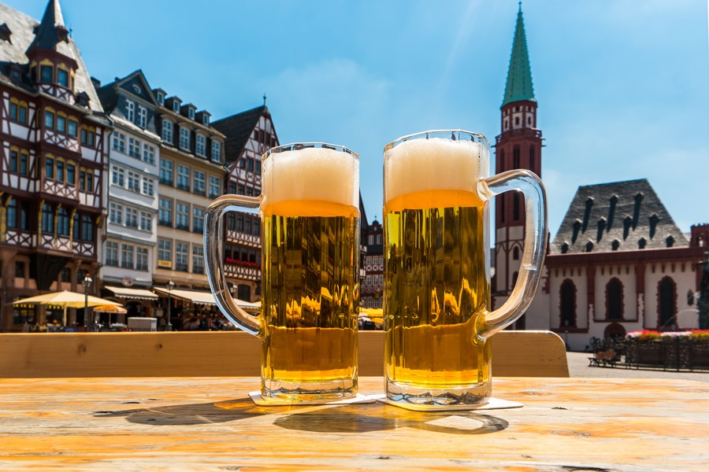

文化
德國身處歐洲大陸之中心，飲食文化與內陸地區之物產分佈息息相關。整體上德國人較為愛好肉類，非常愛吃豬肉，大部分有名的德国菜都是豬肉制品，例如德國香腸，德國豬腳。相較於歐洲中南部精緻飲食，德國的傳統飲食普遍較粗獷；菜餚如烤豬肘、烤豬膝，常佐以馬鈴薯泥、德国酸菜食用。德國是世界啤酒生產大國之一。德国人均啤酒消費量居世界首名。
特色
地方飲食的偏好 北方主食︰馬鈴薯和海鮮類（較少肉類） 南方主食︰麥類食品【如麵類、麵包、「丸子」（"Knodel"）】和肉類 ; 德國共同的基礎糧食 在德國早餐和晚餐的主食為麵包。德國麵包的種類有三百以上之多（如黑麵包、酸麵包、全麥麵包、 八字形麵包和小麵包等等）麵包界成立麵包協會、認證3200個品種，制定行業規格和標準，2015年還入選非物質文化遺產名錄
慕尼黑啤酒節
Oktoberfest 慕尼黑啤酒節，每年九月底到十月初在德國慕尼黑舉行，又稱為十月節。源於1810年啤酒節的第一天早上，身穿傳統服裝的德國各邦代表及其他國家的遊行隊伍聚在一起，由慕尼黑市長與酒廠老闆帶領遊行至主要的舉辦場地─特蕾莎廣場〈Theresienwiese〉，擺滿各廠牌的啤酒供人暢飲。還有許多民俗活動，如音樂會、馬戲團表演，許多販賣站與遊樂設施。平素認真拘謹的德國人，在啤酒助興之下顯得格外狂放。
菜餚
德國酸菜 Sauerkraut
扭結麵包／蝴蝶捲餅 Pretzel
德國豬腳 Schweinehaxe & Eisbein
 蘋果酥捲（Apfelstrudel）

德國烤香腸Bratwurst
德國啤酒（Bier）
